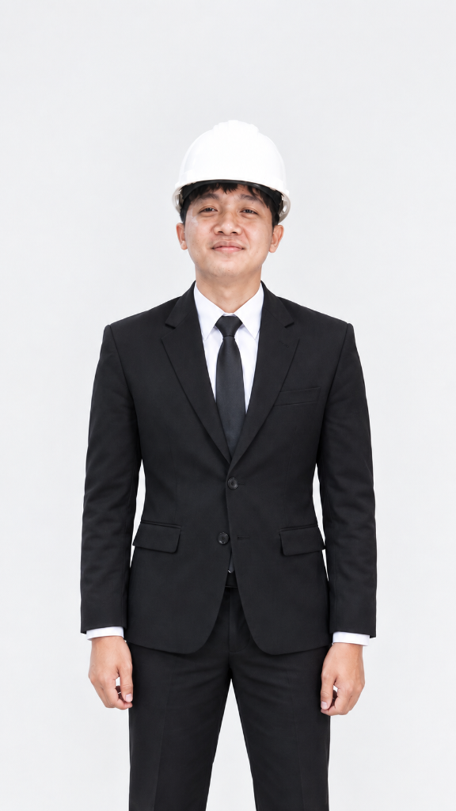
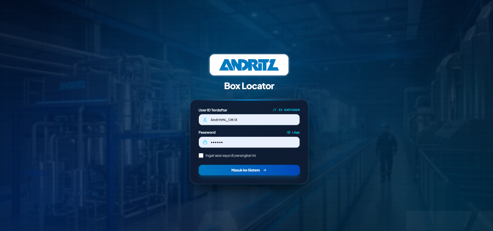
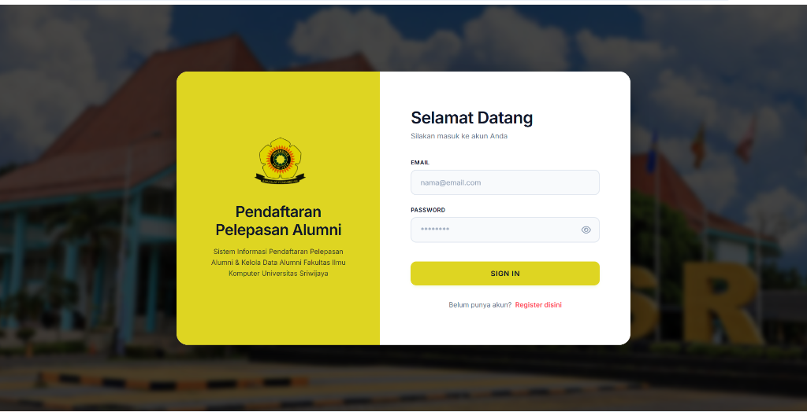

Judul Proyek
Instansi • Kategori
— Saya Lulusan D3 Manajemen Informatika Universitas Sriwijaya (IPK 3.91/4.00). Berfokus pada perancangan arsitektur basis data terstruktur, backend yang kokoh, dan antarmuka responsif dengan Tailwind CSS.

Menggabungkan pemahaman logika bisnis, optimasi basis data, dan pengalaman pengguna yang intuitif.
Full-Stack Web Developer
Saya adalah lulusan Diploma III Manajemen Informatika Universitas Sriwijaya dengan predikat kelulusan tinggi (IPK 3.91). Memiliki minat mendalam pada rekayasa perangkat lunak web dan sistem informasi operasional.
Saya terbiasa memecahkan masalah nyata melalui perangkat lunak: mulai dari membantu transformasi digital birokrasi di Bappeda Litbang Kota Palembang hingga mengotomatiskan pengelolaan logistik dan peralatan teknis di perusahaan industri multinasional PT Andritz.
Fokus: Web Programming, Database Architecture, Software Engineering, Object-Oriented Programming (OOP), dan UI/UX.
Kombinasi teknologi yang terbukti andal dalam membangun aplikasi web modern.
Setiap proyek dibangun untuk menyelesaikan kendala nyata di instansi pemerintah dan industri multinasional.

PT Andritz Web AppAplikasi pemetaan dan pencarian cepat boks komponen logistik workshop industri secara digital untuk meminimalisir salah penempatan suku cadang.

Fasilkom UNSRI Tugas AkhirPlatform registrasi yudisium terintegrasi dengan validasi berkas multi-level, cetak bukti kelulusan otomatis, dan rekapitulasi data mahasiswa Fasilkom UNSRI.
Sistem pelaporan kendala dan monitoring evaluasi kinerja antar Organisasi Perangkat Daerah Kota Palembang dengan pelacakan status tiket transparan.
Rekam jejak kontribusi di lingkungan profesional dan pencapaian akademik di Universitas Sriwijaya.
Berkontribusi dalam modernisasi dan digitalisasi sistem operasional industri di lingkungan multinasional:
Mendukung transformasi digital instansi pemerintahan daerah melalui perancangan aplikasi terintegrasi:
Menyelesaikan pendidikan diploma dengan fokus mendalam pada Rekayasa Perangkat Lunak, Pemrograman Berorientasi Objek (OOP), Perancangan Basis Data Relasional, serta UI/UX Design.
Explore verified certificates from PT Andritz (Cyber Security & Onboarding), international AI & Big Data symposia (CARNAVAL IMWORK), and Palembang City Government internship honors with downloadable original PDF documents.
Tertarik mendiskusikan peluang kerja, proyek pengembangan web, atau interview? Saya siap terhubung.
Instansi • Kategori